The Bund, Shanghai's waterfront, seen from the French Concession, a postcard of the late 1920s or early 1930s. Public domain, Wikimedia Commons.
Q3 story · Nanjing · 1 June 1929
In 1929 Sun Yatsen's Coffin Was Carried Up a Mountain to a Vast New Tomb Outside Nanjing
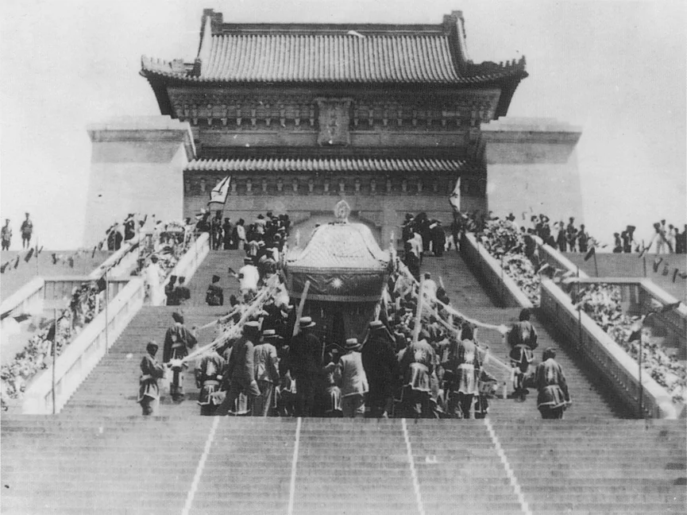
Sun Yatsen's coffin is carried up the steps to the memorial hall of his mausoleum on Purple Mountain, Nanjing, 1 June 1929. Public domain, Wikimedia Commons.
Sun had died in Beijing in 1925; his body waited four years for a tomb.
On 1 June 1929 it was carried south and up 392 granite steps on Purple Mountain.
Chiang walked beside the coffin as Sun's heir.
A modern state was claiming Sun's legacy, in its new capital.
Sources: Ebrey, Ch. 25, p. 442; Charles D. Musgrove, China's Contested Capital: Architecture, Ritual, and Response in Nanjing (2013). Image: Nanjing, 1929.
Q3 story · Nanjing and Manchuria · 1928
In 1928 Three Key Warlords Joined Chiang, Manchuria Raised His Flag, and Nanjing Became the Capital
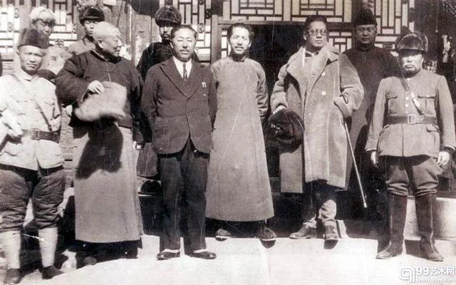
Zhang Xueliang, the young ruler of Manchuria, with the Nationalist finance minister T. V. Soong and their party, about 1930. Public domain, Wikimedia Commons.
In 1928 three key warlords pledged loyalty to the Nationalists.
In December Zhang Xueliang of Manchuria raised the Nationalist flag.
Sources: Ebrey, Ch. 25, p. 442; William C. Kirby, "The Internationalization of China," China Quarterly 150 (1997). Image: 1930s.
Q3 and Q11 story · Nanjing · 1929–1931
A Land Law Capped Rents, and a New Civil Code Made Marriage Monogamous and Let Wives Sue for Divorce
Women students of National Wuhan University, 1928. Public domain, Wikimedia Commons.
The Land Law of 1930 capped rents at 37.5 percent of the main crop.
The Civil Code of 1929–1931 recognized only one wife.
Wives could sue for divorce, and daughters could inherit like sons.
Few landlords obeyed the rent cap, and many men kept concubines.
Sources: Ebrey, Ch. 25, p. 442; Kathryn Bernhardt, Women and Property in China, 960–1949 (1999); Lisa Tran, Concubines in Court (2015). Image: Wuhan, 1928.
Q3 story · Nanjing and the cities · 1930s
Electricity, Engineers, and Doctors: The Cities Modernized
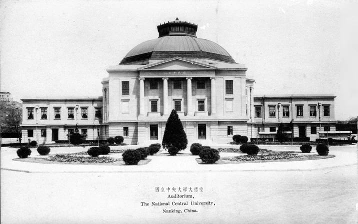
The great hall of National Central University, founded in the new capital in 1928, Nanjing, 1930s. Public domain, Wikimedia Commons.
Electricity, running water, and paved avenues reached the big cities.
A professional class of scientists, engineers, architects, and doctors grew.
Many had studied abroad, and they ran new universities and institutes.
Factories, banks, and railways grew fast until 1937.
Sources: Ebrey, Ch. 25, p. 444; William C. Kirby, "Engineering China," in Becoming Chinese, ed. Wen-hsin Yeh (2000). Image: Nanjing, 1930s.
Q3 story · The countryside · 1930s
But Most Peasants Lived No Better Than They Had Under the Qing
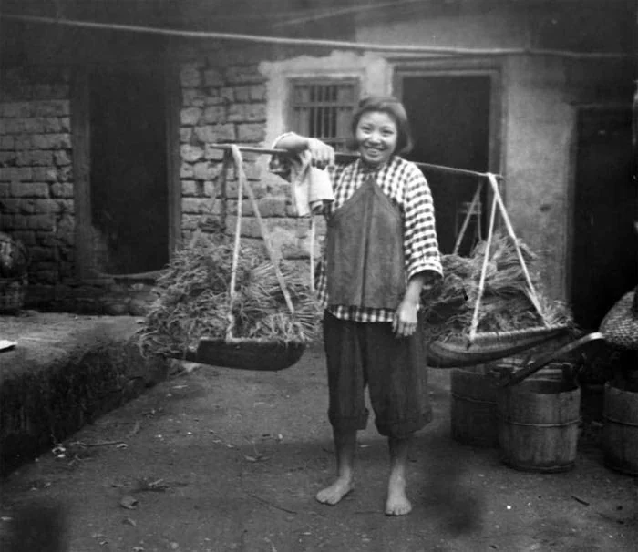
A woman farmer in southern China carries her load on a shoulder pole, 1935. Public domain, Wikimedia Commons.
About 80 percent of Chinese were farmers.
Most had seen no rise in their standard of living since Qing times.
Population passed 500 million by 1930, squeezing the land.
Railways and cheap goods had not yet helped the village economy.
Sources: Ebrey, Ch. 25, p. 444; Lloyd E. Eastman, Family, Fields, and Ancestors (1988). Image: 1935.
Q3 story · Ding County, Hebei · 1926–1937
Reformers Tried to Rebuild the Villages County by County, but Their Gains Rarely Spread or Lasted
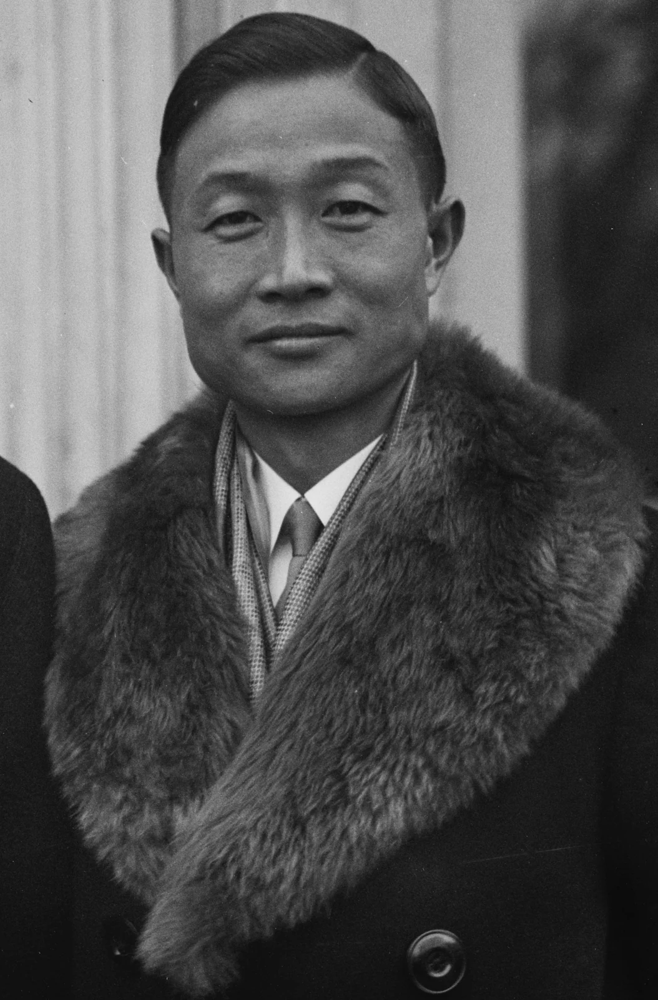
James Yen (Yan Yangchu), leader of the Mass Education Movement, on a visit to Washington, 1928. Harris & Ewing. Public domain, Wikimedia Commons.
James Yen, a Yale graduate, moved his Mass Education Movement to Ding County in 1926.
Teams taught reading with a primer of about a thousand characters.
They added clinics, better seed, credit co-operatives, and village theater.
Such projects reached a few counties and ended when Japan invaded in 1937.
Sources: Ebrey, Ch. 25, p. 444; Charles W. Hayford, To the People: James Yen and Village China (1990). Image: Washington, 1928.
Q3 story · Exports and the world economy · 1929–1935
Silk and Tea Lost Their Markets, Then the World Depression Hit
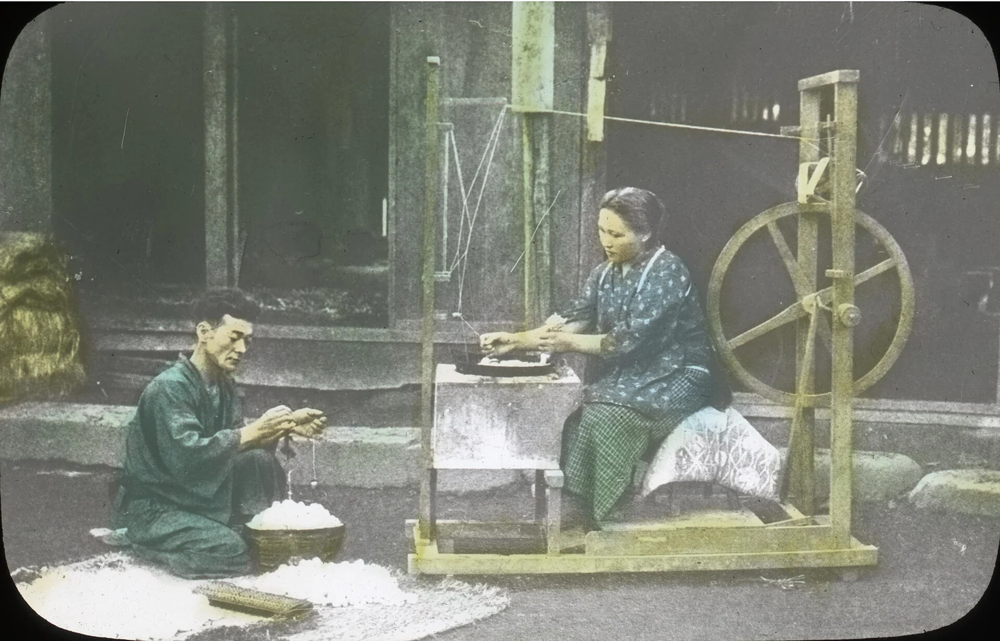
A farm couple weighs cocoons and reels silk by hand, from a lantern-slide lecture of 1915. Oregon State University Special Collections. No known restrictions, Wikimedia Commons.
Silk and tea were China's great exports.
Japanese silk and Indian and Ceylon tea took their markets.
After 1929 the world Depression cut demand for all exports.
Silk farmers in the Yangzi delta lost their cash income.
Sources: Ebrey, Ch. 25, p. 444; Lillian M. Li, China's Silk Trade (1981). Image: 1915.
Reading Guide · Review Question 3
Reading Guide · Review Question 3
Review Question 3
What were the major successes and limitations of the Nationalist government's modernization efforts after reunifying China in 1928?
Sources: Ebrey, Ch. 25, pp. 443–444; Jay Taylor, The Generalissimo (2009). Image: Shanghai, 1927.
Q4 recap · Political tutelage
Recap: Political Tutelage Meant One Party Ruled Until the People Were "Ready"
Concept
Political tutelage
Sun Yatsen's middle stage of the revolution: after military unification, the Nationalist Party would govern alone and train the people in self-government before constitutional democracy began · Ch. 24 L1 · Ch. 24 L1 concept ↗
Chiang declared the period of tutelage in 1928.
So there were no national elections.
The press was censored, and suspected Communists were arrested and often executed.
Tutelage lasted, on paper, until 1947.
Sources: Ebrey, Ch. 25, p. 444; Lloyd E. Eastman, The Abortive Revolution (1974).
Q4 story · Jiangxi · 1930–1934
Chiang Sent Five Campaigns Against the Jiangxi Soviet, and the Fifth Built Blockhouses Around It
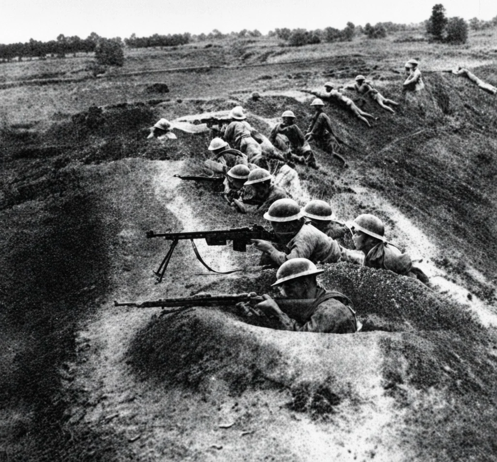
Nationalist infantry in forward trenches during the fifth encirclement campaign, Jiangxi, 1934. Public domain, Wikimedia Commons.
The first four failed against the Red Army's guerrilla tactics.
The fifth, from late 1933, ringed the base with blockhouses and roads.
Chiang said Japan was a disease of the skin; communism, of the heart.
Sources: Ebrey, Ch. 25, pp. 444–445; William Wei, Counterrevolution in China (1985). Image: Jiangxi, 1934.
Q4 story · Germany and Nanjing · 1928–1938
German Advisers Trained His Best Divisions, and Chiang Asked, "Can Fascism Save China?"
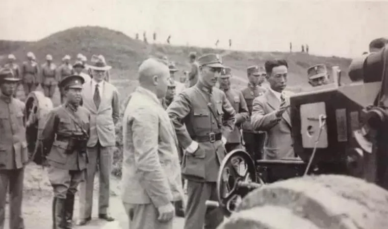
Chiang Kaishek, the ordnance chief Yu Dawei, and General Alexander von Falkenhausen, head of the German advisers, inspect German-made weapons, 1930s. Public domain, Wikimedia Commons.
From 1928 retired German officers advised Chiang's army.
They trained an elite corps and bought German arms for it.
China sent Germany tungsten and other metals in return.
Chiang admired how Germany had rebuilt itself, and asked whether fascism could save China.
Sources: Ebrey, Ch. 25, pp. 443–444; Lloyd E. Eastman, The Abortive Revolution (1974), p. 40; William C. Kirby, Germany and Republican China (1984). Image: 1930s.
Q4 concept · Fascism
Concept: Fascism Promised National Rebirth Through One Leader, Military Discipline, and No Opposition
Concept
Fascism
A political movement of the 1920s and 1930s, first in Mussolini's Italy and Hitler's Germany: an all-powerful nation led by one leader, a single party, a society organized like an army, and the crushing of liberals, socialists, and Communists.
Fascists hated communism and distrusted liberal democracy.
They promised to end national weakness through unity and obedience.
Chiang borrowed the discipline and the leader cult, not the racial ideas.
Historians debate whether his regime was truly fascist.
Sources: Ebrey, Ch. 25, p. 444; Lloyd E. Eastman, The Abortive Revolution (1974); Frederic Wakeman Jr., "A Revisionist View of the Nanjing Decade," China Quarterly 150 (1997).
Q4 story · Nanjing · 1932–1938
The Blue Shirts Trained Young Officers in Obedience and Ran a Secret Police
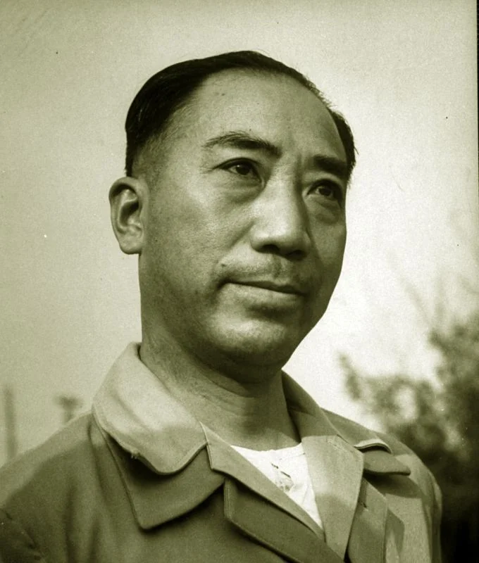
Dai Li, who ran the Blue Shirts' secret service and later Chiang's intelligence bureau, 1940s. Public domain, Wikimedia Commons.
Young Whampoa graduates founded the Blue Shirts in 1932.
They swore loyalty to Chiang and attacked individualism and other New Culture ideas.
Chiang gave them political training in the army and in schools.
Their secret service, under Dai Li, spied on and killed dissenters.
Names in This Story
Dai Lihead of Chiang's secret police, 1897–1946; pronounced "die lee"
Sources: Ebrey, Ch. 25, p. 444; Frederic Wakeman Jr., Spymaster: Dai Li and the Chinese Secret Service (2003). Image: 1940s.
Q4 story · Nanchang and the cities · from February 1934
In 1934 the New Life Movement Told Citizens to Button Their Collars, Stand Straight, and Never Spit
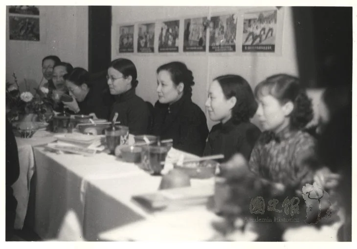
Soong Meiling hosts women delegates on the sixth anniversary of the New Life Movement, 19 February 1940. Public domain, Wikimedia Commons.
Chiang launched the New Life Movement in Nanchang in February 1934.
It joined Confucian virtues to rules for clean, orderly daily life.
Its goal was to "militarize the life of the people of the entire nation."
Soong Meiling led its women's work.
Sources: Ebrey, Ch. 25, p. 444; Jonathan D. Spence, The Search for Modern China (3rd ed., 2013); Arif Dirlik, "The Ideological Foundations of the New Life Movement," Journal of Asian Studies 34 (1975). Image: 1940.
Reading Guide · Review Question 4
Reading Guide · Review Question 4
Review Question 4
How did Chiang Kaishek attempt to combat communist influence during the 1930s, and what foreign models influenced his approach?
By the 1930s Shanghai Had Over 3 Million People and Half of China's Modern Industry
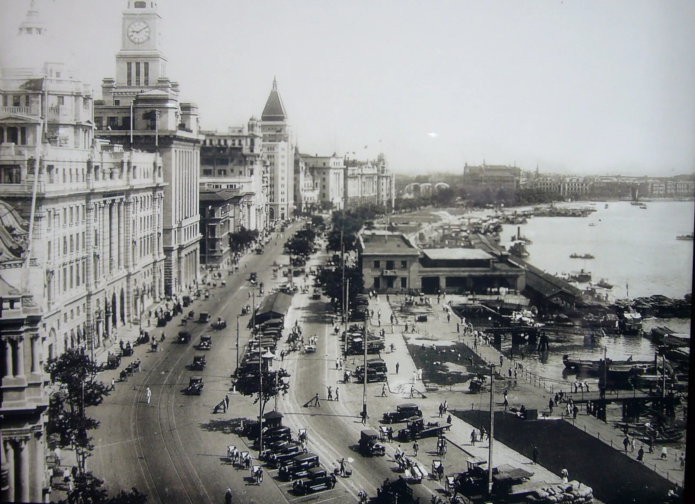
A bird's-eye view of the Bund along the Huangpu River, 1930, as displayed at the Shanghai Urban Planning Exhibition Center. Public domain, Wikimedia Commons.
China's most populous city since 1910, Shanghai had over 3 million people by the 1930s.
It had China's largest port and half its modern industry.
Three governments ran it: the International Settlement, the French Concession, and the Chinese city · Ch. 18 L3 · Concessions ↗
Chinese entrepreneurs prospered, especially those who worked with foreigners.
Sources: Ebrey, Ch. 25, p. 444; Marie-Claire Bergère, Shanghai: China's Gateway to Modernity (2009). Image: 1930.
Q5 story · Shanghai · 1920s–1941
Victor Sassoon Built Skyscrapers, and White Russians and Jewish Refugees Found a Haven
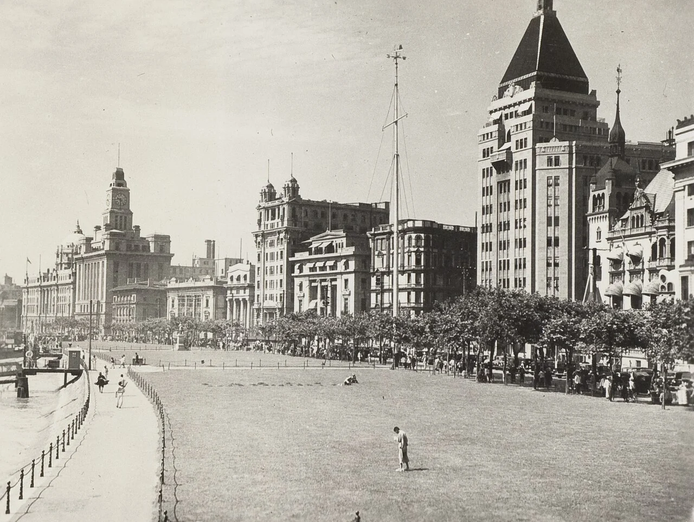
The Bund, with Victor Sassoon's Cathay Hotel (now the Peace Hotel) on the right, 1930s. KITLV. CC BY 4.0, Wikimedia Commons.Jewish refugees from Austria come ashore from the liner Conte Verde, Shanghai, 14 December 1938. Public domain, Wikimedia Commons.
Tens of thousands of foreigners lived in Shanghai, most of them British and Japanese.
Victor Sassoon reportedly owned 1,900 buildings, including the Cathay Hotel.
Russians fleeing the 1917 revolution came by the thousands.
From 1938 some 18,000 Jews fleeing the Nazis came, since no visa was needed.
Sources: Ebrey, Ch. 25, p. 445; Marcia Reynders Ristaino, Port of Last Resort (2001). Images: 1930s; Shanghai, 1938.
Q5 story · The Public Garden, Shanghai · 1890–1928
The Bund's Public Garden Kept Most Chinese Out Until 1928, and a Famous Legend Grew From It
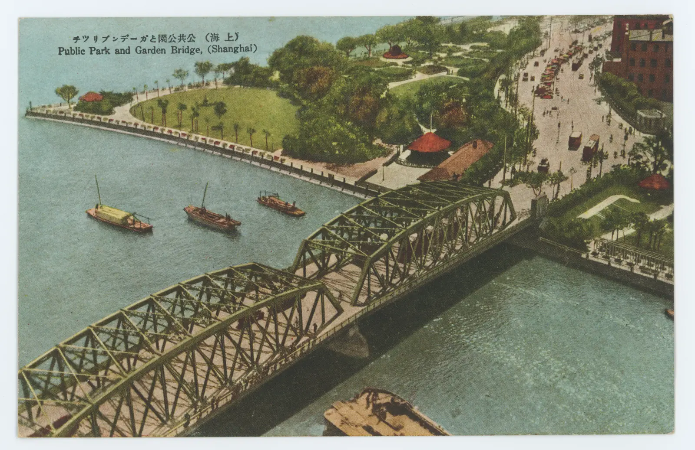
The Public Garden and Garden Bridge at the north end of the Bund, a Japanese postcard of 1928. Public domain, Wikimedia Commons.
The Public Garden on the Bund was built for foreigners.
Its rules barred dogs and, separately, Chinese except servants with foreigners.
Chinese protested for decades; the garden opened to them on 1 June 1928.
Later memory joined the rules into one sign: "No Dogs or Chinese."
Sources: Ebrey, Ch. 25, p. 445; Robert A. Bickers and Jeffrey N. Wasserstrom, "Shanghai's 'Dogs and Chinese Not Admitted' Sign: Legend, History and Contemporary Symbol," China Quarterly 142 (1995). Image: 1928.
Q5 and Q11 story · Shanghai · 1930s
More Than 170,000 Women Worked in Shanghai's Factories, Many Bound to Labor Contractors
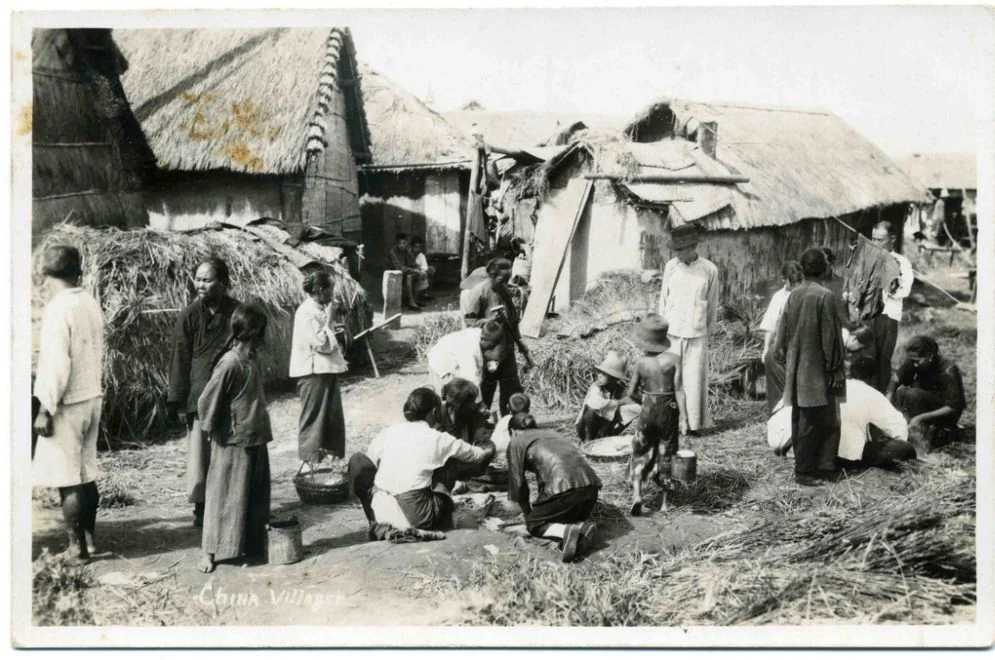
Straw huts on the edge of Shanghai, where many mill workers lived, a postcard of 1929. Public domain, Wikimedia Commons.
In 1930 more than 170,000 women worked in Shanghai's industries, half in cotton mills.
Most were young, unmarried, and illiterate, recruited in the villages.
A contractor paid their parents a small advance and kept their wages.
About 50,000 women worked as prostitutes, many also in debt.
Sources: Ebrey, Ch. 25, p. 445; Emily Honig, Sisters and Strangers: Women in the Shanghai Cotton Mills, 1919–1949 (1986); Gail Hershatter, Dangerous Pleasures (1997). Image: 1929.
Q5 story · Shanghai · 1920s–1930s
From Mill Girl to Film Star, Shanghai Women Wore the Qipao
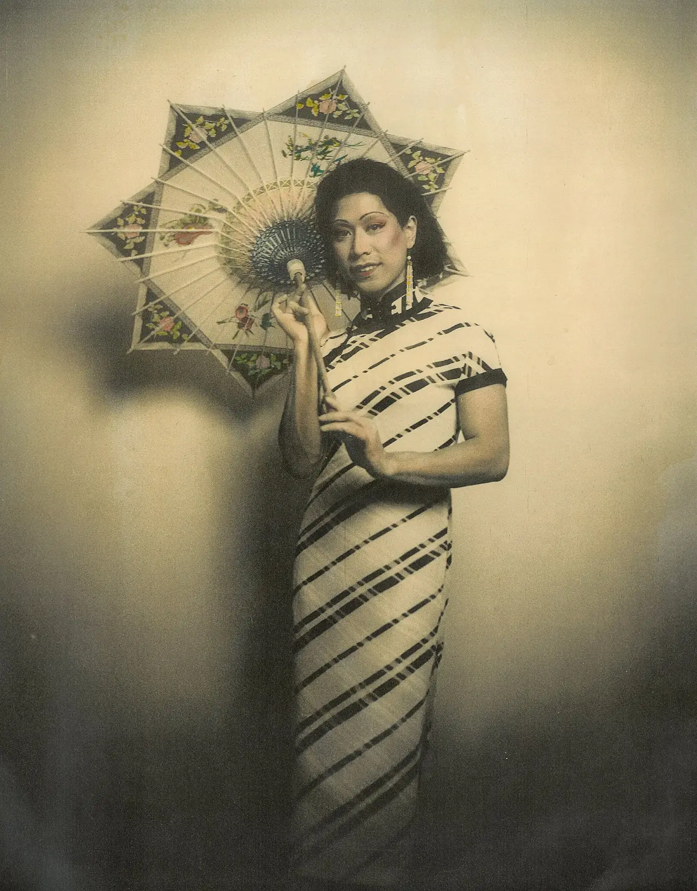
A young woman in a qipao with a parasol, a hand-coloured studio photograph, Shanghai, 1930s. Public domain, Wikimedia Commons.
In 1931 the Nationalists shot five young writers of his League.
Sources: Ebrey, Ch. 25, p. 445; Leo Ou-fan Lee, Shanghai Modern (1999); Wang-chi Wong, Politics and Literature in Shanghai (1991). Image: Shanghai, 1930.
Reading Guide · Review Question 5
Reading Guide · Review Question 5
Review Question 5
How did Shanghai reflect both modernization and social inequality during the 1920s and 1930s?
Next: In October 1934 the Red Army Broke Out of Jiangxi and Began the Long March
The routes of the Long March, 1934–1935. Map by the U.S. Military Academy, West Point. Public domain, Wikimedia Commons.
Chiang's fifth campaign tightened the ring around the Jiangxi Soviet.
In October 1934 about 86,000 Communists broke out to the west.
Lecture 3 follows them, and Japan's advance into China · Ch. 25 L3 ↗
Sources: Ebrey, Ch. 25, p. 445. Image: map.
Pierian Spring · Required Independent Study
Today's lecture ends here. Continue on your own: these slides ask what the new laws of the Republic meant for women, through the life of one servant girl in Hong Kong.
"A little learning is a dang'rous thing; Drink deep, or taste not the Pierian spring."Alexander Pope, An Essay on Criticism, 1711
Pierian Spring · Recap · Women and the law · 1912–1931
Recap: By 1927 Both Parties Promised Women Equal Rights, and in 1930 the Civil Code Wrote Some Into Law
New Culture writers attacked arranged marriage and praised the free choice of a partner · Ch. 24 L3 · Divorce ↗
Both the Nationalists and the Communists promised women equal rights in the 1920s.
The Civil Code of 1929–1931 allowed divorce by consent and daughters' inheritance · New laws ↩
Sources: Ebrey, Ch. 25, p. 442; Kathryn Bernhardt, Women and Property in China, 960–1949 (1999).
Pierian Spring · Story · Hong Kong · about 1913–1930
Yuetsim Was Kidnapped at Three and Sold as a Servant Girl to a Hong Kong Family
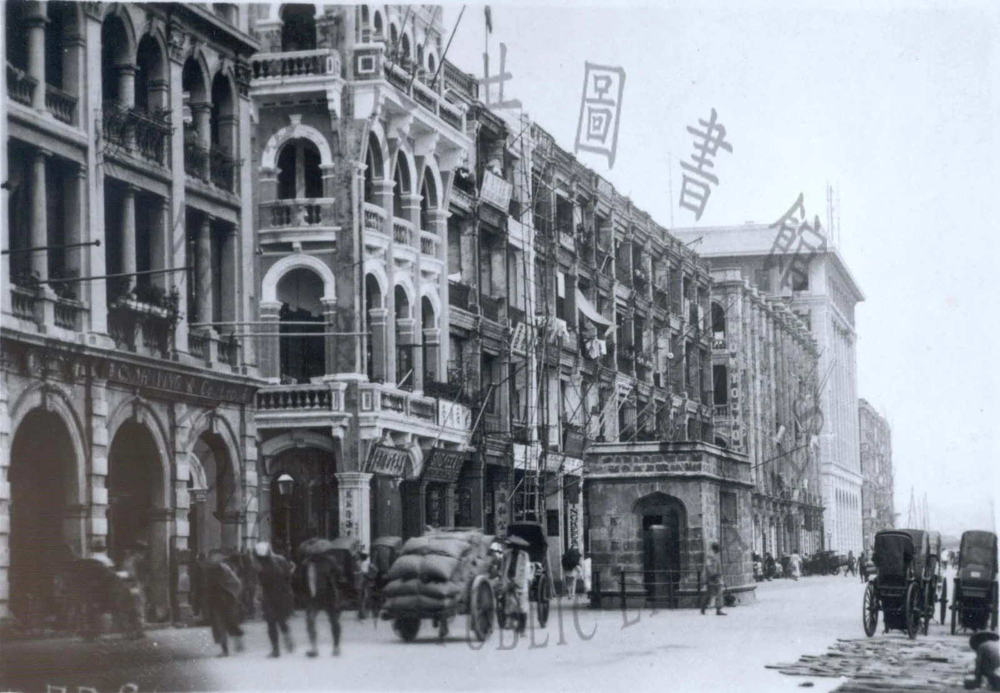
Connaught Road on the Hong Kong waterfront, late 1920s. Public domain, Wikimedia Commons.
Born about 1910, Yuetsim was kidnapped at about three and sold.
The Yeo family of Hong Kong bought her as a "slave girl," a mui tsai.
She fetched and carried for the master's concubine from the age of four or five.
She never learned to read and never heard of the campaigns to free girls like her.
Sources: Ebrey, Ch. 25, p. 443; Maria Jaschok, Concubines and Bondservants (1988). Image: Hong Kong, 1920s.
Pierian Spring · Story · Hong Kong · 1923–1978
Laws Changed in 1923 and 1929, but Yuetsim's Life Changed Little
Hong Kong laws of 1923 and 1929 limited the sale of girls and made owners register and pay them.
When Mr. Yeo had to act, his concubine simply threw Yuetsim out.
After years in a shelter, she went back to the Yeos as a maid.
His children forbade him to marry her; she nursed him into old age.
Sources: Ebrey, Ch. 25, p. 443; Maria Jaschok, Concubines and Bondservants (1988), pp. 69–77; Susan Pedersen, "The Maternalist Moment in British Colonial Policy," Past & Present 171 (2001).
Reading Guide · Review Question 11
Reading Guide · Review Question 11
Review Question 11
How did legal reforms and social realities shape the experiences of women in Republican China?
Patricia Buckley Ebrey, A History of China, Chapter 25, "War and Revolution, China (1927–1949)," pp. 442–445 and 448, including Biography: Yuetsim, Servant Girl (p. 443) and Material Culture: Qipao (p. 448). All page references in this deck are to these pages.
Further reading beyond Ebrey
Charles D. Musgrove, China's Contested Capital (2013) (slide b). Jonathan D. Spence, The Search for Modern China (3rd ed., 2013) (slides c, q). William C. Kirby, "The Internationalization of China," China Quarterly 150 (1997) (slide d); "Engineering China," in Becoming Chinese, ed. Wen-hsin Yeh (2000) (slide f); Germany and Republican China (1984) (slide n).
Kathryn Bernhardt, Women and Property in China, 960–1949 (1999) (slides e, bb). Lisa Tran, Concubines in Court (2015) (slide e). Lloyd E. Eastman, Family, Fields, and Ancestors (1988) (slide g); The Abortive Revolution (1974) (slides l, n, o). Charles W. Hayford, To the People: James Yen and Village China (1990) (slide h). Lillian M. Li, China's Silk Trade (1981) (slide i).
Jay Taylor, The Generalissimo (2009) (slide k). William Wei, Counterrevolution in China (1985) (slide m). Frederic Wakeman Jr., "A Revisionist View of the Nanjing Decade," China Quarterly 150 (1997) (slide o); Spymaster: Dai Li (2003) (slide p). Arif Dirlik, "The Ideological Foundations of the New Life Movement," Journal of Asian Studies 34 (1975) (slide q).
Marie-Claire Bergère, Shanghai: China's Gateway to Modernity (2009) (slide s). Marcia Reynders Ristaino, Port of Last Resort (2001) (slide t). Robert A. Bickers and Jeffrey N. Wasserstrom, China Quarterly 142 (1995) (slide u). Emily Honig, Sisters and Strangers (1986) and Gail Hershatter, Dangerous Pleasures (1997) (slide v). Antonia Finnane, Changing Clothes in China (2008) (slide w). Leo Ou-fan Lee, Shanghai Modern (1999) and Wang-chi Wong, Politics and Literature in Shanghai (1991) (slide x).
Maria Jaschok, Concubines and Bondservants (1988) (slides cc, dd). Susan Pedersen, "The Maternalist Moment in British Colonial Policy," Past & Present 171 (2001) (slide dd).
Images (real, via Wikimedia Commons)
a: Shanghai, late 1920s. b: Nanjing, 1929. c: about 1930. d: 1930s. e: Wuhan, 1928. f: Nanjing, 1930s. g: 1935. h: Harris & Ewing, 1928. i: Oregon State University, 1915 (no known restrictions). k: Shanghai, 1927. m: Jiangxi, 1934. n: 1930s. p: 1940s. q: 1940. Public domain unless noted.
s: Shanghai, 1930. t: KITLV, 1930s (CC BY 4.0); Shanghai, 1938. u: 1928. v: 1929. w: Shanghai, 1930s. x: Shanghai, 1930. z: U.S. Military Academy. cc: Hong Kong, 1920s. Public domain unless noted.